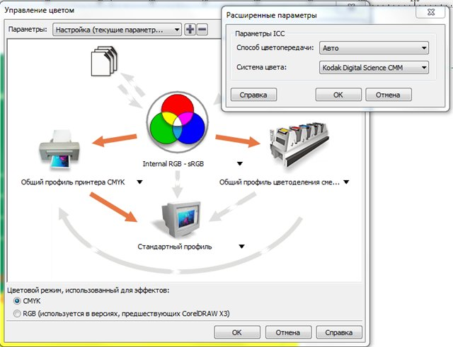
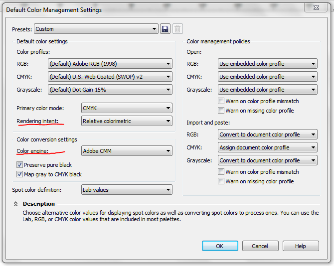

Натройка цветовых профилей в corel X5
Ale / 16.06.2010, 21:38/00:41
Форум:
Как можно настроить цвет в X5.
Во вложении приклеил скрин с настройками цвета из X4.
как правильно настроить настройки для X5.
В X5 вообще не могу найти общий профиль cmyk.
В каком вложении? :)

Ale, 
Я бы всё таки рекомендовал бы использование перцептуального рендеринга.
А в качестве RGB профиля выбрать sRGB.
Так у меня схема kodak ,но в X5 этой схемы нет вообще.
Где можно найти общий профиль цмик для принтера в x5 этого профиля вообще не видно.
1. kodak больше не будет! Скачивайте Adobe CMM с их сайта и устанавливайте.
2. общий профиль цмик... кхм... его по идеи использовать вообще нельзя для проф. работы. Профиль выбирается с учётом тех данным касающихся выводящего устройства.
Всем привет! у меня возникла такая проблема... с которой я ни как не справился. Если можете можете подскажите пожалуйста!
mixa, Изложите проблему точнее, мы не телепаты, хотя, телепатически могу представить, если вы хотите поменять палитру, то она находиться в меню Window - Color Palettes!
Если у вас проблема с отображением белого цвета, то поищите по форуму, это обсуждалось!
просто я думал по картинке будет понятно)))) и так проблема состоит в том что, при открытии корела белый цвет отображается каким то жёлтым цветом, как я понял корел сам меняет профиль и устанавливает профиль монитора!
после установки корела при первом запуске выскакивает окошко в котором указанно два профиля (монитора и корела )
как нибудь можно без переустановки открыть это окошко или же каким нибудь другим методом перевести профиль??
Добавлено (21.06.2010, 13:51)
---------------------------------------------
на форуме я нашел такую же проблему но к сожалению на нее ни кто не ответил))
mixa, настройки здесь: Tools – Color Management – Default Settings
Страницы